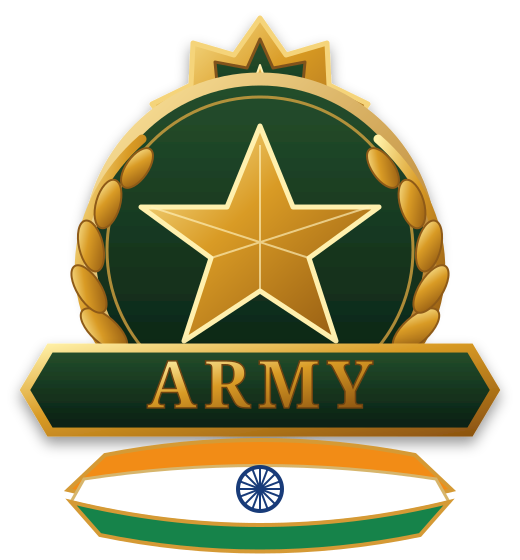

🎖️ NDA
National Defence Academy
Free Available Tests • PYQ Practice • Mock Tests • Solutions • Current Affairs 2026
Register to start your tests.
This account is stored in this device's browser. A shared account requires an online database.

Register once and keep your test history saved.
Your password is stored as a secure hash, not in plain text. This account is saved only on this phone/app. Your mobile number is not OTP-verified. Keep your password safe.
All available tests are free: PYQ practice, mock tests, and explanations with answers. A separate Current Affairs 2026 section is also available.
195 SSC GD practice sets available. More PYQ sets will be added regularly.
1,378 advanced, multi-concept SSC GD Hard Mock Tests.
Dedicated sections for PYQ Tests, Mock Tests, and Hard Mock Tests.
Total: 1,522 Questions
1,478 Question-Answer • 44 MCQs
Topic-wise folders with answers and explanations.
National Defence Academy
Learn • Practice • Succeed
Website by Prajwal Tarare
Choose the test section that best fits your preparation.
A total of 289 PYQ-pattern practice sets are available.
A total of 500 full-length Mock Tests are available.
A total of 376 Hard Mock Tests are available.
Challenging practice papers based on the Maharashtra Police Bharti syllabus.
Each paper: 100 questions • Mathematics 25 • Reasoning 25 • Marathi 25 • GK/Current Affairs 25 • 90 minutes.
Multi-Concept • Reverse Calculation • Modified conditions • 3–5-step Reasoning • Statement-Based GK • Mixed Marathi Grammar.
500 full-length Maharashtra Police Bharti mock tests.
These are newly created practice questions, not official PYQs.
Free MCQ practice based on important 2026 current affairs. Open a topic folder to view each question, answer, and explanation.
Your account is saved on this device.
Your profile information and login are securely saved on this device.
Before installing a new APK, back up your profile, test history, PYQ attempts, and mock test attempts. You can restore this code in the new app.
Keep your backup code private. It may contain your name and test results.
Choose the app theme.
Reload the page.
This information is currently stored only in this browser. A database is required for combined statistics and a shared leaderboard.
The app interface is in English. Hindi remains available as a question-paper language.
Select an available question set to start a practice test.
Select an exam and start a practice test. Use Print / Save as PDF to save the question paper.
Choose from 1,378 SSC GD Hard Mock Test sets here.